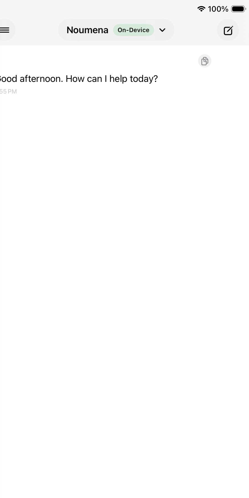

What it explores
How an AI workspace can support focused thinking, writing, and reflection without displacing human judgment.
AI assistant • SwiftUI • Productivity
Noumena Chat is a concept for an AI workspace built around thoughtful use rather than frictionless over-automation. The emphasis is on privacy, clarity, and a user experience that helps people think well while staying in control.

Overview
The interface is designed to feel more like a serious thinking environment than a generic chatbot. The emphasis is on focus, confidence, and a calmer relationship between the user and AI support.